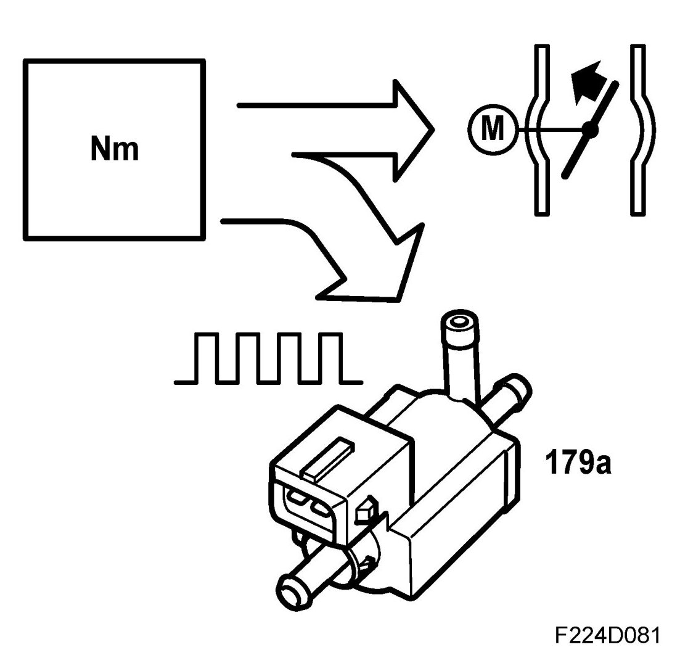
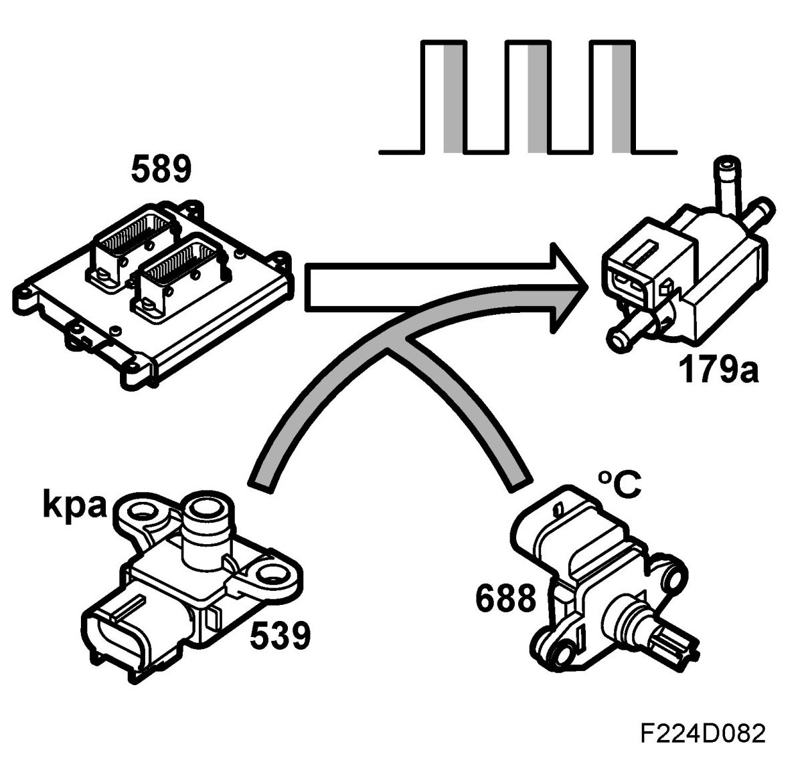
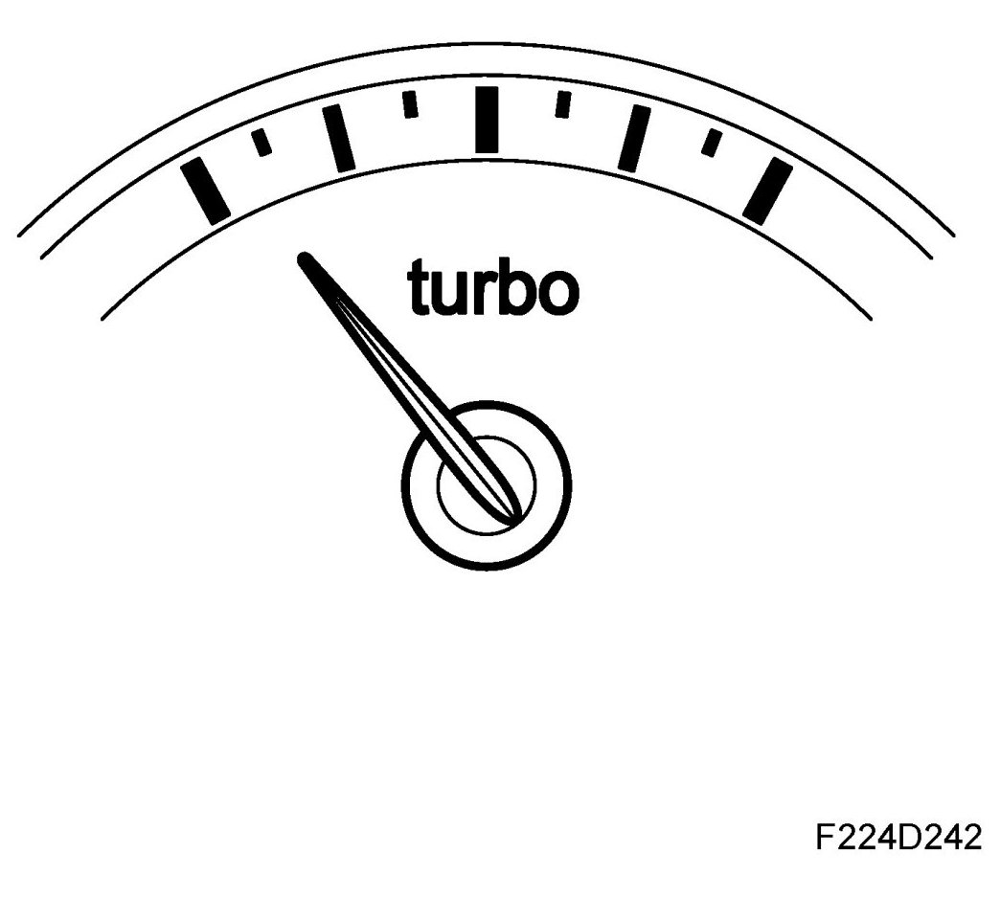

Turbo Adjustment
Turbo Adjustment

The airflow from the turbocharger is regulated by a solenoid valve, which controls the exhaust turbine wastegate pneumatically.
The solenoid valve is supplied with current from the main relay and is grounded from control module pin 56(B) with a 32Hz PWM. The compressor flow increases as the pulse ratio increases.
When the requested air mass/combustion is too great to be regulated by the throttle alone, the turbo control must supply the excess requirement. The excess is converted to a PWM that controls the charge air control valve.
The value of the atmospheric absolute air pressure and the temperature of the intake air are used to correct the conversion. At low atmospheric pressures or when the intake air temperature is high, a greater PWM ratio is required to obtain the same air mass/combustion.

The control module therefore makes sure that the current air mass/combustion corresponds with the requested. If necessary, the PWM ratio is finely adjusted by multiplying it with a correction factor.
The correction factor (adaptation) is stored in the control module memory and is always included in the calculation of the PWM ratio.
This is to ensure that the current air mass/combustion will correspond with the requested as soon as possible after a change in load. The limit for adaptation is 100%.
BioPower
The variant with 2.3 litre engine has a turbo pressure gauge in the main instrument unit. The turbo pressure gauge shows air mass per combustion, which reflects the approximate torque of the engine.

As the engine's torque and accordingly air mass per combustion can be higher during E85 operation, the functionality has been modified slightly. Irrespective of the particular ethanol content of the fuel, the reading of the turbo pressure gauge is adapted to normally show maximum reading when the engine's air mass per combustion has reached the maximum value